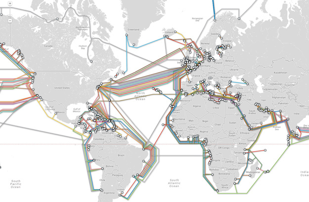

| #travel | #nyc
| #travel | #nyc 
Friday, November 20th, 2015
How the Internet Works
Welcome, welcooooome! I've decided to take a break this week from boring any non-technical people about tech related stuff and instead talk about how the internet works. Well, I guess that's still technical, but this will be more digestible than most of my other posts. Also, wasn't really my decision to write it- was an asignment, but I'll just pretend it occured to me on my own.
Let's jump right in. When people visualize the internet, they usually picture something like this:
That is incorrect. While there is such a thing as "The Cloud," it is not the same as the internet. The internet is actually a line or a wire, which traverses the land either underground or above ground, but it is a tangible thing. It looks like the subway. In fact, here is a map of the internet with interactive capabilities on this link.

On this line, we have special computers called servers. What makes servers special is that they can connect directly to the internet, as opposed to our home computers, which need to access a server first in order to get to the internet. On these servers we have web pages that all have their own unique Internet Protocol Address, or IP address.
An IP address is much like a postal address and helps computers find each other. Even if you have your own web page you've created yourself, it still needs to be hosted by a server in order to be read by the rest of the world. IP address format is a 10 digit number with decimals, and each block of numbers ranges from 0 to 255. Why? Too complicated to explain here (A.K.A. I don't know the answer and am on a deadline, but I can tell you it has something to do with binary code. I'll let you google it.) Anywhooo...
It's true every server has a unique IP adddress, but can you imagine what a pain it would be to try to rememember all of your favorite web sites' IP addresses? That's why we have site names like "Google," "Facebook," "Yahoo" (no one uses Yahoo anymore but you get the idea.)
So what about our home or work computers? They don't connect directly to the internet, but instead connect to a server, or ISP, mentioned above, which in turn, connects to the internet. Personal computers are called "Clients" in internet terminology, because technically, they are clients of the ISP.
Let's say I want to connect to Google from my home laptop. I would hop on my computer, my computer connects to Optimum Online, my provider, which then takes me to Google. Simple enough. Now let's say I wanted to email my mom a picture of my dogs (TIME OUT! PUPPY BREAK!):
I mean, can you even? You can't, right? Sorry, I'm super A.D.D. Anyway, I'm sending this image to my mom over gmail from my home computer. My home computer then connects to Optimum, which connects to the internet, which connects to my mom's ISP, Comcast, which then delivers the image to her computer. It doesn't send it as one whole file though. In order to keep the (internet) wire from getting clogged,the image is sent in pieces. You can think of this idea in terms of the Holland tunnel. There's plenty of room for every car to get through during the entire day, but when they go all at once during rush hour, the tunnel gets congested and people get mad! SO mad! Continuing...
So my mom gets the picture of my pups, which she refers to as her "grand dogs", and she wants to write back, " SQQUUEEEE OMG so cute lol FOMO!" Just kidding, my mom doesn't write like that because she is an adult human over the age of 25. She wants to write, "Dear Jessie, my grand dogs are insurmountably precious! I enjoyed the photos. Love, Mom xoxo." She sends this email, which takes the same toute back to me, but this time, I'm at work, instead of at home. The pathway is essentially the same at first, but in reverse: Mom's computer to Comcast, to the internet, to Optimum, and back to my laptop. Again, the reply is broken down into smaller pieces for expedition purposes. The internet knows which computer to deliver this message to based on IP addresses and routers.
At every point where two different parts of the internet intersect, there is a router with a new IP address. To visualize this process, think of the file you're sending as being a package wrapped in another layer with each router it has to pass. When the reply file or message is on it's way back to you, each wrapper is removed, based on the IP address of the router it came through, to make it's way back to you. Almost like a very low stakes version of the fairy tale, Hansel and Gretel.
Ok, that's it for now. Hopefully you get the idea. PEACE!